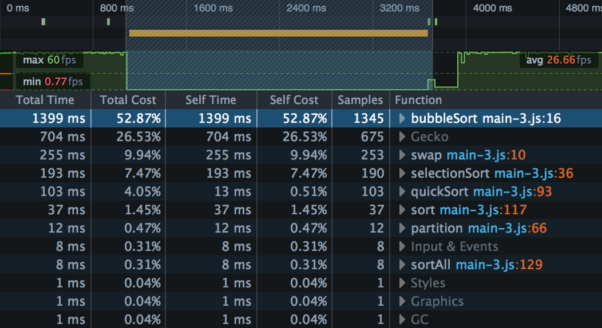
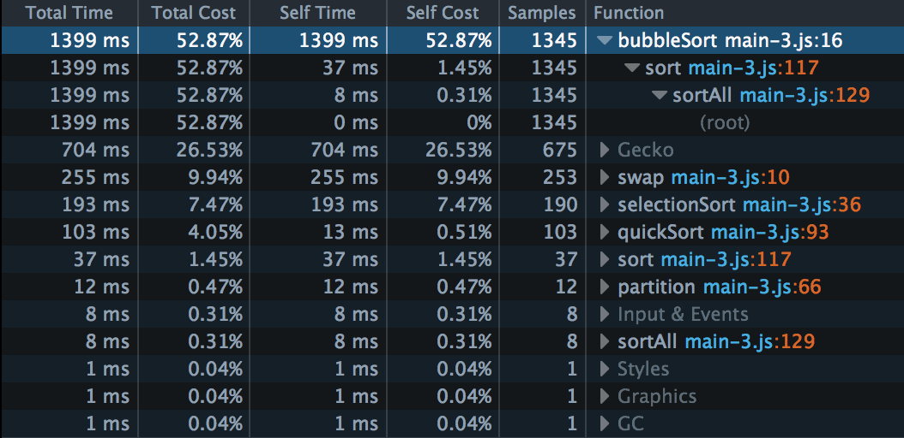
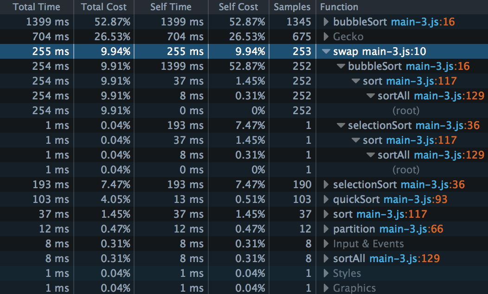
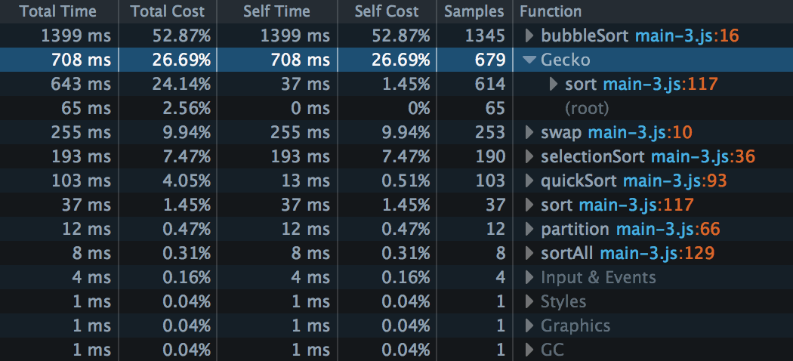
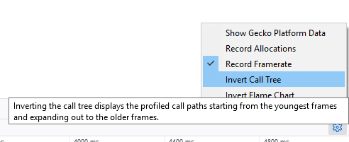

The Call Tree tells you which JavaScript functions the browser spent the most time in. By analyzing its results, you can find bottlenecks in your code - places where the browser is spending a disproportionately large amount of time.
These bottlenecks are the places where any optimizations you can make will have the biggest impact.
The Call Tree is a sampling profiler. It periodically samples the state of the JavaScript engine and records the stack for the code executing at the time. Statistically, the number of samples taken in which we were executing a particular function corresponds to the amount of time the browser spent executing it.
In this article, we'll use the output of a simple program as an example. If you want to get the program to experiment with your profile, you can find it here. You can find the specific profile we discuss here - just import it to the performance tool to follow along.
There's a short page describing the structure of this program here.
Note that we use the same program - the same profile, in fact - in the documentation page for the Flame Chart.
The screenshot below shows the output of a program that compares three sorting algorithms - bubble sort, selection sort, and quicksort. To do this, it generates some arrays filled with random integers and sorts them using each algorithm in turn.
We've zoomed into the part of the recording that shows a long JavaScript marker:

The Call Tree presents the results in a table. Each row represents a function in which at least one sample was taken, and the rows are ordered by the number of samples taken while in that function, highest to lowest.
Samples is the number of samples that were taken when we were executing this particular function, including its children (the other functions called by this particular function).
Total Time is that number translated into milliseconds, based on the total amount of time covered by the selected portion of the recording. These numbers should roughly be the same as the number of samples.
Total Cost is that number as a percentage of the total number of samples in the selected portion of the recording.
Self Time is calculated as the time spent in that particular function, excluding its children. This comes from the captured stacks where this function is the leafmost function.
Self Cost is calculated from Self Time as a percentage of the total number of samples in the selected portion of the recording.
In the current version of the Call Tree, these are the most important columns. Functions with a relatively high Self Cost are good candidates for optimization, either because they take a long time to run, or because they are called very often.
The inverted call tree is a good way to focus on these Self Cost values.
This screenshot tells us something we probably already knew: Bubble sort is a very inefficient algorithm. We have about six times as many samples in bubble sort as in selection sort, and 13 times as many as in quicksort.
Next to each function name is a disclosure arrow: Click that, and you can see the path back up the call tree, from the function in which the sample was taken, to the root. For example, we can expand the entry for bubbleSort():

So we can see the call graph is like this:
sortAll()
-> sort()
-> bubbleSort()
Note also that Self Cost for sort() here is 1.45%, and note that this is the same as for the separate entry for sort() later in the list. This is telling us that some samples were taken in sort() itself, rather than in the functions it calls.
Sometimes there's more than one path back from an entry to the top level. Let's expand the entry for swap():

There were 253 samples taken inside swap(). But swap() was reached by two different paths: both bubbleSort() and selectionSort() use it. We can also see that 252 of the 253 samples in swap() were taken in the bubbleSort() branch, and only one in the selectionSort() branch.
This result means that bubble sort is even less efficient than we had thought! It can shoulder the blame for another 252 samples, or almost another 10% of the total cost.
With this kind of digging, we can figure out the whole call graph, with associated sample count:
sortAll() // 8
-> sort() // 37
-> bubbleSort() // 1345
-> swap() // 252
-> selectionSort() // 190
-> swap() // 1
-> quickSort() // 103
-> partition() // 12
You'll also see some rows labeled Gecko, Input & Events, and so on. These represent internal browser calls.
This can be useful information too. If your site is making the browser work hard, this might not show up as samples recorded in your code, but it is still your problem.
In our example, there are 679 samples assigned to Gecko - the second-largest group after bubbleSort(). Let's expand that:

This result is telling us that 614 of those samples, or about 20% of the total cost, are coming from our sort() call. If we look at the code for sort(), it should be fairly obvious that the high platform data cost is coming from repeated calls to console.log():
function sort(unsorted) {
console.log(bubbleSort(unsorted));
console.log(selectionSort(unsorted));
console.log(quickSort(unsorted));
}
It would certainly be worthwhile considering more efficient ways of implementing this.
One thing to be aware of here is that idle time is classified as Gecko, so parts of your profile where your JavaScript isn't running will contribute Gecko samples. These aren't relevant to the performance of your site.
By default, the Call Tree doesn't split platform data out into separate functions, because they add a great deal of noise, and the details are not likely to be useful to people not working on Firefox. If you want to see the details, check "Show Gecko Platform Data" in the Settings.
An inverted call tree reverses the order of all stacks, putting the leafmost function calls at the top. The direct consequence is that this is a view that focuses more on the function's Self Time information. This is a very useful view to find some hot spot in your code.
To display this view, click the gear icon on the right-hand end of the performance tab and select Invert Call Tree.
